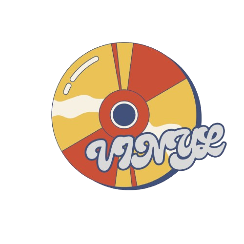

Catalogo e galeria
Busque artistas, albuns e musicas sem resultados misturados fora da sua pesquisa.

Monte seu perfil musical, acompanhe o que seus amigos estao ouvindo, escreva reviews e descubra pessoas com gosto parecido.
Busque artistas, albuns e musicas sem resultados misturados fora da sua pesquisa.
Escreva avaliacoes direto do item certo e mantenha tudo ligado ao seu perfil.
Veja quem combina com seu gosto a partir de favoritos, generos e artistas.
Privacidade, artistas ocultos e mensagens diretas ficam nas suas maos.
Antes de entrar ou criar conta, o Vinyl mostra um resumo claro sobre dados, Spotify, beneficios e termos. Depois, nas configuracoes, voce pode privatizar o perfil, ocultar favoritos e apagar sua conta.